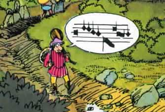

Τροβαδούροι και μενεστρέλοι

Τροβαδούροι ευγενείς και ταπεινοί μενεστρέλοι ταξιδεύουν από κάστρο σε κάστρο για να διασκεδάσουν βασιλείς και ιππότες. Τραγουδούν για τον πόλεμο, για τις σταυροφορίες, αλλά και για τον έρωτα.